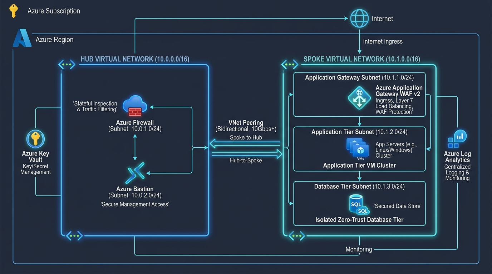

Comprehensive Practice Guide
Enterprise Azure Infrastructure
Complete Beginner-Friendly Hub-and-Spoke Study Guide with Architecture Diagrams, Portal UI Clicks, Code Commands & Interview Q&A

Figure 1.1: Enterprise Hub-and-Spoke Topology with Azure Firewall, VNet Peering, Application Gateway (WAF v2), Tiered Subnets, and Centralized Governance.
🏢 1. The Big Picture & Real-World Analogy
Imagine a high-security corporate headquarters campus:
- The Hub Virtual Network (Hub VNet):
- This is the main security entrance gate of the corporate campus.
- Contains the security guards (Azure Firewall) who inspect everyone entering or leaving.
- Contains the visitor pass desk (Azure Bastion) where authorized IT engineers can sign in securely without exposing building keys to the public.
- Has a dedicated private terminal (GatewaySubnet) for underground shuttles connecting directly to your on-premises office data center (VPN / ExpressRoute).
- The Spoke Virtual Network (Spoke VNet):
- This is the private office building where actual company work takes place.
- Floor 1 (Web Tier - 10.1.1.0/24): Reception desk welcoming outside visitors (Application Gateway with Web Application Firewall).
- Floor 2 (App Tier - 10.1.2.0/24): Private offices where employees run business operations (Virtual Machines / APIs). Direct outside visitors are strictly barred from entering.
- Floor 3 (Database Tier - 10.1.3.0/24): The locked underground vault where money and customer records are kept (SQL/PostgreSQL Databases). Only Floor 2 employees can open this vault.
- VNet Peering:
The private, enclosed skywalk connecting the security gate (Hub) directly to the office building (Spoke). No one ever walks on the open public street.
- Route Tables (User-Defined Routes / UDR):
A strict company policy saying: "Whenever any employee sends anything to the outside world, you CANNOT jump out the window. You MUST walk through the security guards at the front gate (Azure Firewall) first."
☁️ 2. Core Cloud Concepts Explained (Points-Based)
- Virtual Network (VNet):
An isolated private network in the Azure cloud, like having your own data center. An address space of
10.0.0.0/16 provides 65,536 private IP addresses.
- Subnet:
A smaller partition of a VNet (e.g.
10.0.1.0/24 provides 256 IPs). Subnets help organize and isolate workloads into distinct security zones.
- VNet Peering:
Connects two separate VNets using Microsoft's private high-speed backbone. Traffic never touches the public internet. Provides low latency, high bandwidth, and data is encrypted automatically.
- Azure Firewall:
A fully managed, cloud-based network security service. Performs stateful packet inspection (remembers who initiated the connection) and filters traffic at both Layer 3/4 (IP & Port) and Layer 7 (Application domain names / FQDNs like
*.ubuntu.com or *.microsoft.com).
- Route Table (UDR - User Defined Route):
Overrides Azure's default routing. We create a route pointing destination
0.0.0.0/0 (the entire internet) to Next Hop Type Virtual Appliance with Next Hop IP 10.0.1.4 (Azure Firewall).
- Network Security Group (NSG):
A virtual packet firewall attached to subnets or NICs. Contains ordered rules (Priority 100 to 4096) that Allow or Deny traffic based on 5-tuple: Source IP, Source Port, Destination IP, Destination Port, and Protocol (TCP/UDP).
- Application Gateway & WAF v2:
A Layer 7 reverse proxy and load balancer. Inspects incoming HTTP/HTTPS requests before they reach your app. Web Application Firewall (WAF) blocks OWASP Top 10 exploits like SQL Injection (SQLi) and Cross-Site Scripting (XSS).
- Azure Key Vault:
A hardware security module (HSM) backed vault in the cloud. Safely stores passwords, API tokens, connection strings, and SSL certificates so zero secrets are hardcoded in application code.
- Log Analytics Workspace:
Central data store where diagnostic logs and telemetry from all resources are streamed for auditing and threat detection using KQL (Kusto Query Language).
🖱️ 3. Step-by-Step Azure Portal (UI / GUI) Practice Guide
Follow these exact visual steps in the Azure Portal (https://portal.azure.com):
- In the top search bar, type "Resource groups" and click it.
- Click "+ Create".
- Select your Subscription.
- Resource group name:
rg-enterprise-prod
- Region:
East US (or your preferred region).
- Click "Review + create", then "Create".
- Open
vnet-hub-prod → On the left menu, click "Peerings" → Click "+ Add".
- Peering link name:
hub-to-spoke.
- Under "Remote virtual network", select
vnet-spoke-prod.
- Remote peering link name:
spoke-to-hub.
- Check both boxes to allow traffic between both VNets → Click "Add". Peering status will say
Connected.
- Search "Firewalls" → Click "+ Create".
- Name:
afw-hub-prod, Region: East US, SKU: Standard.
- Virtual network: Select "Use existing" → Choose
vnet-hub-prod.
- Public IP: Click "Add new" → Name:
pip-afw-prod → Click "Review + create".
- Search "Route tables" → Click "+ Create" → Name:
rt-spoke-egress.
- Open
rt-spoke-egress → Click "Routes" → Click "+ Add".
- Route name:
default-egress-to-firewall → Destination: 0.0.0.0/0 → Next hop: Virtual appliance → Next hop IP: 10.0.1.4 (Firewall private IP).
- On the left menu, click "Subnets" → Click "+ Associate" → Link to
snet-app and snet-data.
- Create NSGs:
nsg-web, nsg-app, and nsg-data.
- In
nsg-app: Add Inbound rule: Source: 10.1.1.0/24 (Web Subnet), Port: 80,443, Action: Allow, Priority: 100.
- In
nsg-data: Add Inbound rule: Source: 10.1.2.0/24 (App Subnet), Port: 1433,5432, Action: Allow, Priority: 100. Add Deny Internet rule: Priority 200.
💻 4. Step-by-Step Code Practice with Terraform & PowerShell
All automated infrastructure code is located in Azure infra case study 1/:
# 1. Open PowerShell and navigate to the project directory:
cd "d:\MY_Portfolio\Azure infra case study 1"
# 2. Log into Azure CLI:
az login
az account show
# 3. Deploy using the automated PowerShell helper script:
.\scripts\deploy.ps1
# The script validates syntax, runs 'terraform fmt', generates plan, and prompts for confirmation.
# 4. Or practice manual Terraform commands:
cd terraform
terraform init
terraform plan -out=tfplan
terraform apply tfplan
# 5. Inspect deployed outputs:
terraform output
# 6. Clean up when finished practicing to avoid cloud bills:
cd ..
.\scripts\destroy.ps1
🔄 5. How Traffic Moves (Step-by-Step Flows)
Flow 1: When an External User Visits Your Website
- 1. User types your domain into their browser → Resolves to Application Gateway Public IP.
- 2. Application Gateway terminates HTTPS, checks WAF rules (OWASP Top 10).
- 3. If clean, Gateway forwards request over VNet Peering to App Tier (
10.1.2.0/24).
- 4. App Tier VM processes request and queries Database Tier (
10.1.3.0/24) on port 1433/5432.
- 5. Database NSG verifies: "Is request from 10.1.2.0/24? Yes → Allow."
- 6. Database returns data → App VM responds back to Application Gateway → User sees page.
Flow 2: When an Application Server Downloads OS Updates
- 1. App Server requests:
https://security.ubuntu.com/updates.
- 2. Spoke Route Table intercepts: "0.0.0.0/0 route forces traffic to 10.0.1.4 (Firewall)."
- 3. Packet travels across VNet Peering to Azure Firewall.
- 4. Azure Firewall checks Application Rules: "Is *.ubuntu.com allowed? Yes."
- 5. Azure Firewall performs NAT, downloads update from Internet, and returns it to VM.
🛠️ 6. Real-World Problems Encountered & How to Fix Them
Problem 1: Asymmetric Routing on Ingress Traffic
What happens: You apply a route table (0.0.0.0/0 → Azure Firewall) to ALL subnets, including the Application Gateway subnet. Incoming web requests time out.
Why: External clients send packets directly to the Application Gateway Public IP. The gateway tries to send response packets back, but the route table forces them through the Azure Firewall. The firewall drops them because it never saw the initial SYN handshake packet.
Solution: NEVER attach the 0.0.0.0/0 route to the Application Gateway subnet. Only attach it to the backend App and Database subnets.
Problem 2: Zero-Trust NSG Blocking Health Probes
What happens: Application Gateway displays "Backend server unhealthy - HTTP 502".
Why: Applying aggressive deny rules on App subnets inadvertently blocks health probe packets sent by the gateway.
Solution: Add a high-priority Inbound Allow rule for service tag AzureLoadBalancer and ports 65200-65535 for GatewayManager before your deny rules.
🎯 7. Top Technical Interview Questions & Answers
Q1: Why do enterprises use Hub-and-Spoke instead of a single flat network?
Answer:
1. Cost Efficiency: Rather than paying for separate firewalls, VPN gateways, and ExpressRoutes for every project, you centralize perimeter tools in one Hub.
2. Security Isolation: Each department gets its own Spoke. If one Spoke is compromised, attackers cannot reach other Spokes because Spokes cannot communicate without passing through the central firewall.
Q2: What is the difference between Network Security Groups (NSGs) and Azure Firewall?
Answer:
NSGs operate at Layer 4 (filtering simple IP addresses and port numbers). Azure Firewall operates up to Layer 7 (inspecting domain names like *.github.com, TLS termination, and stateful application rules). Best practice is Defense-in-Depth: use both together.
Q3: What does the route "0.0.0.0/0" with Next Hop "Virtual Appliance" do?
Answer:
0.0.0.0/0 represents the default route (the entire internet). Specifying Next Hop Virtual Appliance overrides Azure's default direct internet egress and forces every outbound packet through the private IP of Azure Firewall (10.0.1.4) for inspection and logging.
✅ 8. Daily Revision Checklist